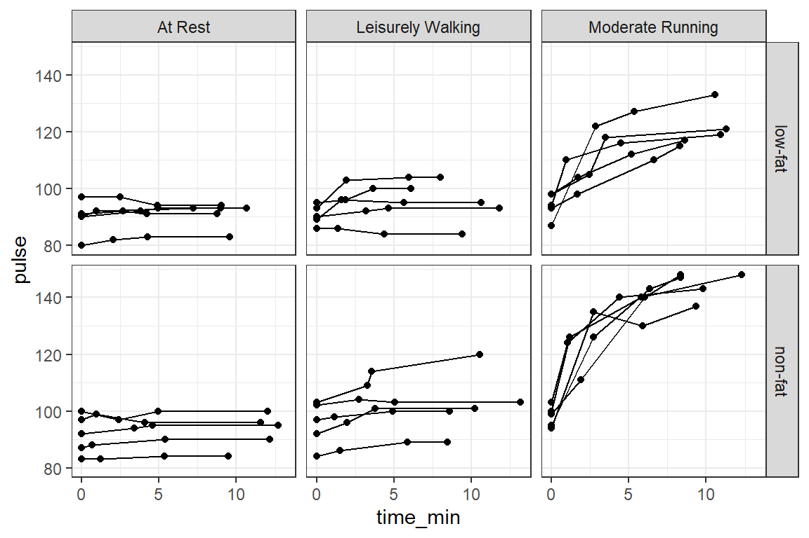
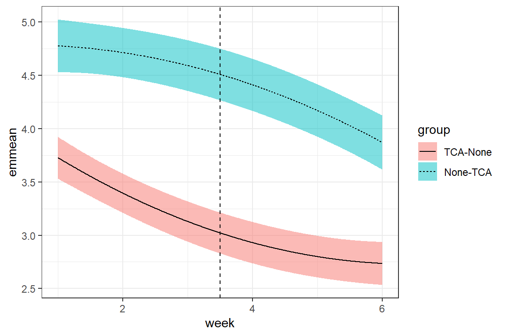

14 MLM, Longitudinal: RCT - Exercise and Diet
library(tidyverse) # all things tidy
library(pander) # nice looking genderal tabulations
library(furniture) # nice table1() descriptives
library(texreg) # Convert Regression Output to LaTeX or HTML Tables
library(psych) # contains some useful functions, like headTail
library(performance) # ICC calculations
library(interactions)
library(sjPlot) # Visualization for Models
library(effects) # Effec displays for Models
library(lme4) # non-linear mixed-effects models14.1 The dataset
This comes from a Randomized Controled Trial.
data_raw <- read.table("https://raw.githubusercontent.com/CEHS-research/data/master/MLM/exercise_diet.txt",
header = TRUE,
sep = ",")tibble::glimpse(data_raw)Rows: 120
Columns: 5
$ id <int> 1, 1, 1, 1, 2, 2, 2, 2, 3, 3, 3, 3, 4, 4, 4, 4, 5, 5, 5, 5, 6…
$ exertype <int> 1, 1, 1, 1, 1, 1, 1, 1, 1, 1, 1, 1, 1, 1, 1, 1, 1, 1, 1, 1, 1…
$ diet <int> 1, 1, 1, 1, 1, 1, 1, 1, 1, 1, 1, 1, 1, 1, 1, 1, 1, 1, 1, 1, 2…
$ pulse <int> 90, 92, 93, 93, 90, 92, 93, 93, 97, 97, 94, 94, 80, 82, 83, 8…
$ time <int> 0, 228, 296, 639, 0, 56, 434, 538, 0, 150, 295, 541, 0, 121, …data_long <- data_raw %>%
dplyr::mutate(id = id %>% factor) %>%
dplyr::mutate(exertype = exertype %>%
factor(levels = 1:3,
labels = c("At Rest",
"Leisurely Walking",
"Moderate Running"))) %>%
dplyr::mutate(diet = diet %>%
factor(levels = 1:2,
labels = c("low-fat",
"non-fat"))) %>%
dplyr::mutate(time_min = time / 60)data_long %>%
psych::headTail(top = 10, bottom = 10) %>%
pander::pander(caption = "Raw Data")| id | exertype | diet | pulse | time | time_min | |
|---|---|---|---|---|---|---|
| 1 | 1 | At Rest | low-fat | 90 | 0 | 0 |
| 2 | 1 | At Rest | low-fat | 92 | 228 | 3.8 |
| 3 | 1 | At Rest | low-fat | 93 | 296 | 4.93 |
| 4 | 1 | At Rest | low-fat | 93 | 639 | 10.65 |
| 5 | 2 | At Rest | low-fat | 90 | 0 | 0 |
| 6 | 2 | At Rest | low-fat | 92 | 56 | 0.93 |
| 7 | 2 | At Rest | low-fat | 93 | 434 | 7.23 |
| 8 | 2 | At Rest | low-fat | 93 | 538 | 8.97 |
| 9 | 3 | At Rest | low-fat | 97 | 0 | 0 |
| 10 | 3 | At Rest | low-fat | 97 | 150 | 2.5 |
| … | NA | NA | NA | … | … | … |
| 111 | 28 | Moderate Running | non-fat | 140 | 263 | 4.38 |
| 112 | 28 | Moderate Running | non-fat | 143 | 588 | 9.8 |
| 113 | 29 | Moderate Running | non-fat | 94 | 0 | 0 |
| 114 | 29 | Moderate Running | non-fat | 135 | 164 | 2.73 |
| 115 | 29 | Moderate Running | non-fat | 130 | 353 | 5.88 |
| 116 | 29 | Moderate Running | non-fat | 137 | 560 | 9.33 |
| 117 | 30 | Moderate Running | non-fat | 99 | 0 | 0 |
| 118 | 30 | Moderate Running | non-fat | 111 | 114 | 1.9 |
| 119 | 30 | Moderate Running | non-fat | 140 | 362 | 6.03 |
| 120 | 30 | Moderate Running | non-fat | 148 | 501 | 8.35 |
14.2 Exploratory Data Analysis
14.2.1 Participant Summary
In this experiment, both exercise (exertype) and diet (diet) were randomized at the subject level to create a 2x3 = 6 combinations each with exactly 5 participants.
data_long %>%
dplyr::filter(time == 0) %>%
dplyr::group_by(exertype) %>%
furniture::table1("Diet, randomized" = diet,
caption = "Participants",
output = "markdown")| At Rest | Leisurely Walking | Moderate Running | |
|---|---|---|---|
| n = 10 | n = 10 | n = 10 | |
| Diet, randomized | |||
| low-fat | 5 (50%) | 5 (50%) | 5 (50%) |
| non-fat | 5 (50%) | 5 (50%) | 5 (50%) |
14.2.2 Baseline Summary
data_long %>%
dplyr::filter(time == 0) %>%
dplyr::group_by(exertype, diet) %>%
dplyr::summarise(mean = mean(pulse)) %>%
dplyr::ungroup() %>%
tidyr::pivot_wider(names_from = diet,
values_from = mean) %>%
pander::pander(caption = "Baseline Pulse, Means")summarise() has grouped output by ‘exertype’. You can override using the .groups argument.
| exertype | low-fat | non-fat |
|---|---|---|
| At Rest | 90 | 92 |
| Leisurely Walking | 91 | 96 |
| Moderate Running | 94 | 98 |
14.2.3 Raw Trajectories - Person Profile Plot
14.2.3.1 Connect the dots
data_long %>%
ggplot(aes(x = time_min,
y = pulse)) +
geom_point() +
geom_line(aes(group = id)) +
facet_grid(diet ~ exertype) +
theme_bw()
14.2.3.2 Loess - Moving Average Smoothers
data_long %>%
ggplot(aes(x = time_min,
y = pulse,
color = diet)) +
geom_line(aes(group = id)) +
facet_grid(~ exertype) +
theme_bw() +
geom_smooth(method = "loess",
se = FALSE,
size = 2,
span = 5) +
theme(legend.position = c(0.08, 0.85),
legend.background = element_rect(color = "black")) +
labs(title = "Raw Pulse Trajectories",
subtitle = "By Exercise and Diet Groupings",
x = "Time (Minutes Post-Baseline)",
y = "Pulse (Beats per Minute)",
color = "Diet Plan")14.3 Multilevel Modeling
14.3.1 Null Model
fit_lmer_0re <- lmerTest::lmer(pulse ~ 1 + (1 | id),
data = data_long)texreg::knitreg(fit_lmer_0re, single.row = TRUE)| Model 1 | |
|---|---|
| (Intercept) | 102.13 (2.54)*** |
| AIC | 963.89 |
| BIC | 972.25 |
| Log Likelihood | -478.95 |
| Num. obs. | 120 |
| Num. groups: id | 30 |
| Var: id (Intercept) | 165.84 |
| Var: Residual | 109.39 |
| ***p < 0.001; **p < 0.01; *p < 0.05 | |
14.3.2 ICC & R-squared
performance::icc(fit_lmer_0re)# Intraclass Correlation Coefficient
Adjusted ICC: 0.603
Unadjusted ICC: 0.603performance::r2(fit_lmer_0re)# R2 for Mixed Models
Conditional R2: 0.603
Marginal R2: 0.00014.3.3 Add fixed effects: level specific
14.3.3.1 Fit nested models
# Null Model (random intercept only)
fit_lmer_0ml <- lmerTest::lmer(pulse ~ 1 + (1 | id),
data = data_long,
REML = FALSE)
# Add quadratic time
fit_lmer_1ml <- lmerTest::lmer(pulse ~ time_min + I(time_min^2) + (1 | id),
data = data_long,
REML = FALSE)
# Add main effects for 2 interventions (person-specific, i.e. level-2 factors)
fit_lmer_2ml <- lmerTest::lmer(pulse ~ diet + exertype + time_min + I(time_min^2) + (1 | id),
data = data_long,
REML = FALSE)
# Add interaction between level-2 factors
fit_lmer_3ml <- lmerTest::lmer(pulse ~ diet*exertype + time_min + I(time_min^2) + (1 | id),
data = data_long,
REML = FALSE)
# Add exercise interacting with [time & time-squared]
fit_lmer_4ml <- lmerTest::lmer(pulse ~ diet*exertype + exertype*time_min + exertype*I(time_min^2) + (1 | id),
data = data_long,
REML = FALSE)
# Add diet interacting with [time & time-squared]
fit_lmer_5ml <- lmerTest::lmer(pulse ~ diet*exertype*time_min + diet*exertype*I(time_min^2) + (1 | id),
data = data_long,
REML = FALSE)texreg::knitreg(list(fit_lmer_1ml,
fit_lmer_2ml,
fit_lmer_3ml,
fit_lmer_4ml,
fit_lmer_5ml))| Model 1 | Model 2 | Model 3 | Model 4 | Model 5 | |
|---|---|---|---|---|---|
| (Intercept) | 94.05*** | 79.30*** | 82.15*** | 89.89*** | 89.81*** |
| (2.71) | (2.46) | (2.64) | (2.69) | (2.78) | |
| time_min | 3.57*** | 3.58*** | 3.44*** | 0.24 | 0.37 |
| (0.65) | (0.64) | (0.64) | (0.62) | (0.87) | |
| time_min^2 | -0.21*** | -0.21*** | -0.20*** | -0.01 | -0.03 |
| (0.06) | (0.06) | (0.06) | (0.05) | (0.09) | |
| dietnon-fat | 8.36*** | 2.89 | 1.99 | 2.11 | |
| (2.21) | (3.36) | (3.45) | (3.89) | ||
| exertypeLeisurely Walking | 5.20 | 3.81 | 0.84 | 1.40 | |
| (2.70) | (3.34) | (3.78) | (3.92) | ||
| exertypeModerate Running | 26.43*** | 19.71*** | 0.53 | 5.71 | |
| (2.70) | (3.34) | (3.77) | (3.92) | ||
| dietnon-fat:exertypeLeisurely Walking | 2.83 | 3.70 | 2.53 | ||
| (4.73) | (4.86) | (5.50) | |||
| dietnon-fat:exertypeModerate Running | 13.47** | 14.02** | 3.99 | ||
| (4.74) | (4.86) | (5.50) | |||
| exertypeLeisurely Walking:time_min | 1.17 | 1.09 | |||
| (0.87) | (1.17) | ||||
| exertypeModerate Running:time_min | 8.19*** | 5.77*** | |||
| (0.90) | (1.20) | ||||
| exertypeLeisurely Walking:time_min^2 | -0.07 | -0.08 | |||
| (0.08) | (0.11) | ||||
| exertypeModerate Running:time_min^2 | -0.48*** | -0.33** | |||
| (0.08) | (0.11) | ||||
| dietnon-fat:time_min | -0.17 | ||||
| (1.14) | |||||
| dietnon-fat:time_min^2 | 0.02 | ||||
| (0.10) | |||||
| dietnon-fat:exertypeLeisurely Walking:time_min | 0.21 | ||||
| (1.56) | |||||
| dietnon-fat:exertypeModerate Running:time_min | 4.42** | ||||
| (1.61) | |||||
| dietnon-fat:exertypeLeisurely Walking:time_min^2 | 0.01 | ||||
| (0.14) | |||||
| dietnon-fat:exertypeModerate Running:time_min^2 | -0.27 | ||||
| (0.15) | |||||
| AIC | 927.70 | 884.96 | 881.11 | 785.34 | 769.23 |
| BIC | 941.64 | 907.26 | 908.99 | 824.36 | 824.98 |
| Log Likelihood | -458.85 | -434.48 | -430.56 | -378.67 | -364.62 |
| Num. obs. | 120 | 120 | 120 | 120 | 120 |
| Num. groups: id | 30 | 30 | 30 | 30 | 30 |
| Var: id (Intercept) | 167.58 | 19.46 | 11.03 | 24.13 | 25.64 |
| Var: Residual | 67.47 | 67.47 | 67.52 | 20.95 | 15.32 |
| ***p < 0.001; **p < 0.01; *p < 0.05 | |||||
14.3.3.2 Evaluate Model Fit, i.e. variable significance
anova(fit_lmer_1ml,
fit_lmer_2ml,
fit_lmer_3ml,
fit_lmer_4ml,
fit_lmer_5ml)Data: data_long
Models:
fit_lmer_1ml: pulse ~ time_min + I(time_min^2) + (1 | id)
fit_lmer_2ml: pulse ~ diet + exertype + time_min + I(time_min^2) + (1 | id)
fit_lmer_3ml: pulse ~ diet * exertype + time_min + I(time_min^2) + (1 | id)
fit_lmer_4ml: pulse ~ diet * exertype + exertype * time_min + exertype * I(time_min^2) + (1 | id)
fit_lmer_5ml: pulse ~ diet * exertype * time_min + diet * exertype * I(time_min^2) + (1 | id)
npar AIC BIC logLik deviance Chisq Df Pr(>Chisq)
fit_lmer_1ml 5 927.70 941.64 -458.85 917.70
fit_lmer_2ml 8 884.96 907.26 -434.48 868.96 48.742 3 1.480e-10 ***
fit_lmer_3ml 10 881.11 908.99 -430.56 861.11 7.847 2 0.01977 *
fit_lmer_4ml 14 785.34 824.36 -378.67 757.34 103.776 4 < 2.2e-16 ***
fit_lmer_5ml 20 769.23 824.98 -364.62 729.23 28.108 6 8.968e-05 ***
---
Signif. codes: 0 '***' 0.001 '**' 0.01 '*' 0.05 '.' 0.1 ' ' 1performance::compare_performance(fit_lmer_1ml,
fit_lmer_2ml,
fit_lmer_3ml,
fit_lmer_4ml,
fit_lmer_5ml,
rank = TRUE)# Comparison of Model Performance Indices
Name | Model | R2 (cond.) | R2 (marg.) | ICC | RMSE | Sigma | AIC weights | AICc weights | BIC weights | Performance-Score
-----------------------------------------------------------------------------------------------------------------------------------------------
fit_lmer_5ml | lmerModLmerTest | 0.944 | 0.850 | 0.626 | 3.462 | 3.914 | 1.000 | 0.997 | 0.423 | 94.78%
fit_lmer_4ml | lmerModLmerTest | 0.923 | 0.835 | 0.535 | 4.080 | 4.577 | 3.18e-04 | 0.003 | 0.577 | 65.87%
fit_lmer_1ml | lmerModLmerTest | 0.748 | 0.121 | 0.713 | 7.221 | 8.214 | 3.87e-35 | 2.07e-33 | 1.97e-26 | 14.18%
fit_lmer_2ml | lmerModLmerTest | 0.750 | 0.678 | 0.224 | 7.644 | 8.214 | 7.40e-26 | 2.68e-24 | 5.75e-19 | 11.97%
fit_lmer_3ml | lmerModLmerTest | 0.750 | 0.710 | 0.140 | 7.800 | 8.217 | 5.07e-25 | 1.28e-23 | 2.42e-19 | 10.27%14.3.4 Final Model
Refit via REML
fit_lmer_5re <- lmerTest::lmer(pulse ~ diet*exertype*time_min +
diet*exertype*I(time_min^2) + (1 | id),
data = data_long,
REML = TRUE)14.3.4.1 Visualize
sjPlot::plot_model(fit_lmer_5re,
type = "pred",
terms = c("time_min", "diet", "exertype"))interactions::interact_plot(fit_lmer_5re,
pred = time_min,
modx = diet,
mod2 = exertype,
interval = TRUE)effects::Effect(focal.predictors = c("diet", "exertype", "time_min"),
mod = fit_lmer_5re) %>%
data.frame %>%
ggplot(aes(x = time_min,
y = fit,
fill = diet,
color = diet)) +
geom_line(size = 1.5) +
theme_bw() +
facet_grid(~ exertype) +
theme(legend.position = c(0.08, 0.85),
legend.background = element_rect(color = "black")) +
labs(title = "Raw Pulse Trajectories",
subtitle = "By Exercise and Diet Groupings",
x = "Time (Minutes Post-Baseline)",
y = "Estimated Marginal Mean\nPulse (Beats per Minute)",
fill = "Diet Plan",
color = "Diet Plan")
effects::Effect(focal.predictors = c("diet", "exertype", "time_min"),
mod = fit_lmer_5re,
xlevels = list("time_min" = seq(from = 0,
to = 12,
by = 0.5))) %>%
data.frame %>%
dplyr::mutate(diet = fct_rev(diet)) %>% # reverse the order of the levels
ggplot(aes(x = time_min,
y = fit)) +
geom_ribbon(aes(ymin = fit - se,
ymax = fit + se,
fill = diet),
alpha = 0.3) +
geom_line(aes(linetype = diet),
size = 1) +
theme_bw() +
facet_grid(~ exertype) +
theme(legend.position = c(0.12, 0.85),
legend.background = element_rect(color = "black"),
legend.key.width = unit(2, "cm")) +
labs(title = "Raw Pulse Trajectories",
subtitle = "By Randomized Exercise and Diet Intervention",
x = "Time (Minutes Post-Baseline)",
y = "Estimated Marginal Mean\nPulse (Beats per Minute)",
fill = "Diet Plan",
color = "Diet Plan",
linetype = "Diet Plan") +
scale_fill_manual(values = c("black", "gray50")) +
scale_linetype_manual(values = c("solid", "longdash")) +
scale_x_continuous(breaks = seq(from = 0, to = 14, by = 5))
library(tidyverse)
library(nlme)df_long <- read.table("data/bock1983_wpss_tca.txt",
col.names = c("id", "wpss",
"int", "linear_time", "change_time",
"group", "x2", "x3")) %>%
dplyr::mutate(week = 3.5 + linear_time) %>%
dplyr::mutate(group = factor(group,
levels = c(0, 1),
labels = c("TCA-None",
"None-TCA"))) %>%
dplyr::select(id, group, week, wpss)df_long id group week wpss
1 1 TCA-None 1 1
2 1 TCA-None 2 1
3 1 TCA-None 3 1
4 1 TCA-None 4 1
5 1 TCA-None 5 1
6 1 TCA-None 6 1
7 2 TCA-None 1 4
8 2 TCA-None 2 3
9 2 TCA-None 3 3
10 2 TCA-None 4 3
11 2 TCA-None 5 4
12 2 TCA-None 6 4
13 3 TCA-None 1 4
14 3 TCA-None 2 3
15 3 TCA-None 3 3
16 3 TCA-None 4 4
17 3 TCA-None 5 4
18 3 TCA-None 6 4
19 4 TCA-None 1 5
20 4 TCA-None 2 3
21 4 TCA-None 3 2
22 4 TCA-None 4 2
23 4 TCA-None 5 5
24 4 TCA-None 6 5
25 5 TCA-None 1 5
26 5 TCA-None 2 5
27 5 TCA-None 3 1
28 5 TCA-None 4 2
29 5 TCA-None 5 2
30 5 TCA-None 6 2
31 6 TCA-None 1 3
32 6 TCA-None 2 2
33 6 TCA-None 3 2
34 6 TCA-None 4 2
35 6 TCA-None 5 1
36 6 TCA-None 6 1
37 7 TCA-None 1 5
38 7 TCA-None 2 5
39 7 TCA-None 3 5
40 7 TCA-None 4 5
41 7 TCA-None 5 1
42 7 TCA-None 6 1
43 8 TCA-None 1 3
44 8 TCA-None 2 3
45 8 TCA-None 3 3
46 8 TCA-None 4 4
47 8 TCA-None 5 4
48 8 TCA-None 6 4
49 9 TCA-None 1 2
50 9 TCA-None 2 1
51 9 TCA-None 3 1
52 9 TCA-None 4 1
53 9 TCA-None 5 1
54 9 TCA-None 6 1
55 10 TCA-None 1 5
56 10 TCA-None 2 5
57 10 TCA-None 3 5
58 10 TCA-None 4 5
59 10 TCA-None 5 5
60 10 TCA-None 6 5
61 11 TCA-None 1 3
62 11 TCA-None 2 3
63 11 TCA-None 3 3
64 11 TCA-None 4 3
65 11 TCA-None 5 1
66 11 TCA-None 6 1
67 12 TCA-None 1 3
68 12 TCA-None 2 3
69 12 TCA-None 3 2
70 12 TCA-None 4 2
71 12 TCA-None 5 3
72 12 TCA-None 6 3
73 13 TCA-None 1 5
74 13 TCA-None 2 4
75 13 TCA-None 3 3
76 13 TCA-None 4 1
77 13 TCA-None 5 1
78 13 TCA-None 6 1
79 14 TCA-None 1 6
80 14 TCA-None 2 5
81 14 TCA-None 3 5
82 14 TCA-None 4 5
83 14 TCA-None 5 5
84 14 TCA-None 6 6
85 15 TCA-None 1 1
86 15 TCA-None 2 1
87 15 TCA-None 3 1
88 15 TCA-None 4 1
89 15 TCA-None 5 1
90 15 TCA-None 6 1
91 16 TCA-None 1 2
92 16 TCA-None 2 2
93 16 TCA-None 3 3
94 16 TCA-None 4 3
95 16 TCA-None 5 3
96 16 TCA-None 6 3
97 17 TCA-None 1 1
98 17 TCA-None 2 1
99 17 TCA-None 3 1
100 17 TCA-None 4 1
101 17 TCA-None 5 1
102 17 TCA-None 6 1
103 18 TCA-None 1 5
104 18 TCA-None 2 4
105 18 TCA-None 3 4
106 18 TCA-None 4 1
107 18 TCA-None 5 1
108 18 TCA-None 6 1
109 19 TCA-None 1 5
110 19 TCA-None 2 5
111 19 TCA-None 3 5
112 19 TCA-None 4 4
113 19 TCA-None 5 4
114 19 TCA-None 6 3
115 20 TCA-None 1 4
116 20 TCA-None 2 4
117 20 TCA-None 3 3
118 20 TCA-None 4 3
119 20 TCA-None 5 3
120 20 TCA-None 6 3
121 21 TCA-None 1 2
122 21 TCA-None 2 1
123 21 TCA-None 3 1
124 21 TCA-None 4 1
125 21 TCA-None 5 1
126 21 TCA-None 6 1
127 22 TCA-None 1 2
128 22 TCA-None 2 3
129 22 TCA-None 3 4
130 22 TCA-None 4 3
131 22 TCA-None 5 4
132 22 TCA-None 6 2
133 23 TCA-None 1 3
134 23 TCA-None 2 3
135 23 TCA-None 3 3
136 23 TCA-None 4 3
137 23 TCA-None 5 3
138 23 TCA-None 6 3
139 24 TCA-None 1 5
140 24 TCA-None 2 6
141 24 TCA-None 3 5
142 24 TCA-None 4 6
143 24 TCA-None 5 5
144 24 TCA-None 6 6
145 25 TCA-None 1 5
146 25 TCA-None 2 5
147 25 TCA-None 3 5
148 25 TCA-None 4 5
149 25 TCA-None 5 5
150 25 TCA-None 6 5
151 26 TCA-None 1 3
152 26 TCA-None 2 3
153 26 TCA-None 3 3
154 26 TCA-None 4 1
155 26 TCA-None 5 1
156 26 TCA-None 6 1
157 27 TCA-None 1 6
158 27 TCA-None 2 6
159 27 TCA-None 3 6
160 27 TCA-None 4 6
161 27 TCA-None 5 6
162 27 TCA-None 6 6
163 28 TCA-None 1 3
164 28 TCA-None 2 3
165 28 TCA-None 3 3
166 28 TCA-None 4 3
167 28 TCA-None 5 3
168 28 TCA-None 6 3
169 29 TCA-None 1 4
170 29 TCA-None 2 4
171 29 TCA-None 3 4
172 29 TCA-None 4 4
173 29 TCA-None 5 4
174 29 TCA-None 6 4
175 30 TCA-None 1 6
176 30 TCA-None 2 6
177 30 TCA-None 3 6
178 30 TCA-None 4 6
179 30 TCA-None 5 6
180 30 TCA-None 6 6
181 31 TCA-None 1 3
182 31 TCA-None 2 3
183 31 TCA-None 3 3
184 31 TCA-None 4 3
185 31 TCA-None 5 3
186 31 TCA-None 6 3
187 32 TCA-None 1 5
188 32 TCA-None 2 5
189 32 TCA-None 3 5
190 32 TCA-None 4 5
191 32 TCA-None 5 5
192 32 TCA-None 6 5
193 33 TCA-None 1 4
194 33 TCA-None 2 4
195 33 TCA-None 3 4
196 33 TCA-None 4 4
197 33 TCA-None 5 4
198 33 TCA-None 6 4
199 34 TCA-None 1 3
200 34 TCA-None 2 3
201 34 TCA-None 3 3
202 34 TCA-None 4 3
203 34 TCA-None 5 3
204 34 TCA-None 6 2
205 35 TCA-None 1 5
206 35 TCA-None 2 4
207 35 TCA-None 3 4
208 35 TCA-None 4 3
209 35 TCA-None 5 1
210 35 TCA-None 6 1
211 36 TCA-None 1 4
212 36 TCA-None 2 3
213 36 TCA-None 3 1
214 36 TCA-None 4 1
215 36 TCA-None 5 1
216 36 TCA-None 6 1
217 37 TCA-None 1 2
218 37 TCA-None 2 2
219 37 TCA-None 3 2
220 37 TCA-None 4 2
221 37 TCA-None 5 2
222 37 TCA-None 6 2
223 38 TCA-None 1 4
224 38 TCA-None 2 4
225 38 TCA-None 3 3
226 38 TCA-None 4 3
227 38 TCA-None 5 3
228 38 TCA-None 6 3
229 39 TCA-None 1 3
230 39 TCA-None 2 3
231 39 TCA-None 3 3
232 39 TCA-None 4 2
233 39 TCA-None 5 2
234 39 TCA-None 6 2
235 40 TCA-None 1 5
236 40 TCA-None 2 4
237 40 TCA-None 3 1
238 40 TCA-None 4 1
239 40 TCA-None 5 1
240 40 TCA-None 6 1
241 41 TCA-None 1 5
242 41 TCA-None 2 5
243 41 TCA-None 3 5
244 41 TCA-None 4 4
245 41 TCA-None 5 4
246 41 TCA-None 6 4
247 42 TCA-None 1 4
248 42 TCA-None 2 3
249 42 TCA-None 3 3
250 42 TCA-None 4 3
251 42 TCA-None 5 3
252 42 TCA-None 6 3
253 43 TCA-None 1 4
254 43 TCA-None 2 3
255 43 TCA-None 3 3
256 43 TCA-None 4 2
257 43 TCA-None 5 2
258 43 TCA-None 6 2
259 44 TCA-None 1 5
260 44 TCA-None 2 5
261 44 TCA-None 3 4
262 44 TCA-None 4 4
263 44 TCA-None 5 4
264 44 TCA-None 6 3
265 45 TCA-None 1 3
266 45 TCA-None 2 2
267 45 TCA-None 3 2
268 45 TCA-None 4 1
269 45 TCA-None 5 1
270 45 TCA-None 6 1
271 46 TCA-None 1 3
272 46 TCA-None 2 3
273 46 TCA-None 3 1
274 46 TCA-None 4 1
275 46 TCA-None 5 1
276 46 TCA-None 6 1
277 47 None-TCA 1 6
278 47 None-TCA 2 6
279 47 None-TCA 3 6
280 47 None-TCA 4 6
281 47 None-TCA 5 6
282 47 None-TCA 6 6
283 48 None-TCA 1 6
284 48 None-TCA 2 6
285 48 None-TCA 3 6
286 48 None-TCA 4 6
287 48 None-TCA 5 6
288 48 None-TCA 6 6
289 49 None-TCA 1 5
290 49 None-TCA 2 5
291 49 None-TCA 3 5
292 49 None-TCA 4 5
293 49 None-TCA 5 4
294 49 None-TCA 6 3
295 50 None-TCA 1 6
296 50 None-TCA 2 6
297 50 None-TCA 3 6
298 50 None-TCA 4 6
299 50 None-TCA 5 6
300 50 None-TCA 6 6
301 51 None-TCA 1 5
302 51 None-TCA 2 5
303 51 None-TCA 3 5
304 51 None-TCA 4 5
305 51 None-TCA 5 5
306 51 None-TCA 6 5
307 52 None-TCA 1 3
308 52 None-TCA 2 2
309 52 None-TCA 3 2
310 52 None-TCA 4 2
311 52 None-TCA 5 1
312 52 None-TCA 6 1
313 53 None-TCA 1 5
314 53 None-TCA 2 4
315 53 None-TCA 3 4
316 53 None-TCA 4 4
317 53 None-TCA 5 4
318 53 None-TCA 6 4
319 54 None-TCA 1 5
320 54 None-TCA 2 5
321 54 None-TCA 3 5
322 54 None-TCA 4 5
323 54 None-TCA 5 5
324 54 None-TCA 6 5
325 55 None-TCA 1 5
326 55 None-TCA 2 3
327 55 None-TCA 3 3
328 55 None-TCA 4 3
329 55 None-TCA 5 3
330 55 None-TCA 6 2
331 56 None-TCA 1 3
332 56 None-TCA 2 3
333 56 None-TCA 3 2
334 56 None-TCA 4 2
335 56 None-TCA 5 3
336 56 None-TCA 6 3
337 57 None-TCA 1 3
338 57 None-TCA 2 3
339 57 None-TCA 3 3
340 57 None-TCA 4 3
341 57 None-TCA 5 4
342 57 None-TCA 6 4
343 58 None-TCA 1 5
344 58 None-TCA 2 5
345 58 None-TCA 3 5
346 58 None-TCA 4 5
347 58 None-TCA 5 5
348 58 None-TCA 6 5
349 59 None-TCA 1 5
350 59 None-TCA 2 5
351 59 None-TCA 3 4
352 59 None-TCA 4 4
353 59 None-TCA 5 4
354 59 None-TCA 6 4
355 60 None-TCA 1 5
356 60 None-TCA 2 5
357 60 None-TCA 3 5
358 60 None-TCA 4 5
359 60 None-TCA 5 5
360 60 None-TCA 6 4
361 61 None-TCA 1 5
362 61 None-TCA 2 5
363 61 None-TCA 3 5
364 61 None-TCA 4 5
365 61 None-TCA 5 4
366 61 None-TCA 6 3
367 62 None-TCA 1 3
368 62 None-TCA 2 3
369 62 None-TCA 3 4
370 62 None-TCA 4 4
371 62 None-TCA 5 3
372 62 None-TCA 6 3
373 63 None-TCA 1 4
374 63 None-TCA 2 5
375 63 None-TCA 3 5
376 63 None-TCA 4 5
377 63 None-TCA 5 5
378 63 None-TCA 6 4
379 64 None-TCA 1 3
380 64 None-TCA 2 3
381 64 None-TCA 3 3
382 64 None-TCA 4 3
383 64 None-TCA 5 3
384 64 None-TCA 6 3
385 65 None-TCA 1 4
386 65 None-TCA 2 4
387 65 None-TCA 3 4
388 65 None-TCA 4 5
389 65 None-TCA 5 5
390 65 None-TCA 6 5
391 66 None-TCA 1 5
392 66 None-TCA 2 5
393 66 None-TCA 3 5
394 66 None-TCA 4 5
395 66 None-TCA 5 5
396 66 None-TCA 6 5
397 67 None-TCA 1 6
398 67 None-TCA 2 6
399 67 None-TCA 3 6
400 67 None-TCA 4 6
401 67 None-TCA 5 4
402 67 None-TCA 6 4
403 68 None-TCA 1 6
404 68 None-TCA 2 6
405 68 None-TCA 3 6
406 68 None-TCA 4 6
407 68 None-TCA 5 6
408 68 None-TCA 6 6
409 69 None-TCA 1 5
410 69 None-TCA 2 5
411 69 None-TCA 3 5
412 69 None-TCA 4 5
413 69 None-TCA 5 5
414 69 None-TCA 6 5
415 70 None-TCA 1 5
416 70 None-TCA 2 5
417 70 None-TCA 3 4
418 70 None-TCA 4 3
419 70 None-TCA 5 2
420 70 None-TCA 6 2
421 71 None-TCA 1 4
422 71 None-TCA 2 4
423 71 None-TCA 3 5
424 71 None-TCA 4 5
425 71 None-TCA 5 5
426 71 None-TCA 6 4
427 72 None-TCA 1 5
428 72 None-TCA 2 5
429 72 None-TCA 3 5
430 72 None-TCA 4 3
431 72 None-TCA 5 2
432 72 None-TCA 6 2
433 73 None-TCA 1 5
434 73 None-TCA 2 4
435 73 None-TCA 3 3
436 73 None-TCA 4 3
437 73 None-TCA 5 2
438 73 None-TCA 6 2
439 74 None-TCA 1 5
440 74 None-TCA 2 6
441 74 None-TCA 3 6
442 74 None-TCA 4 5
443 74 None-TCA 5 5
444 74 None-TCA 6 3
445 75 None-TCA 1 5
446 75 None-TCA 2 5
447 75 None-TCA 3 5
448 75 None-TCA 4 5
449 75 None-TCA 5 5
450 75 None-TCA 6 4df_wide <- df_long %>%
tidyr::pivot_wider(names_from = week,
names_prefix = "wpss_",
values_from = wpss)df_wide %>%
dplyr::select(starts_with("wpss")) %>%
cor() %>%
corrplot::corrplot.mixed()df_long %>%
ggplot(aes(x = week,
y = wpss)) +
geom_line(aes(group = id),
alpha = .2) +
theme_bw() +
facet_grid(. ~ group) +
stat_summary() +
stat_summary(fun = "mean",
geom = "line") +
geom_vline(xintercept = 3.5, linetype = "dashed")14.4 Autoregression 1
fit_cpm_ar1 <- nlme::gls(wpss ~ group*I(week-3.5) + group*I((week - 3.5)^2),
data = df_long,
correlation = corAR1(form = ~ 1 | id))summary(fit_cpm_ar1)Generalized least squares fit by REML
Model: wpss ~ group * I(week - 3.5) + group * I((week - 3.5)^2)
Data: df_long
AIC BIC logLik
1037.232 1069.999 -510.616
Correlation Structure: AR(1)
Formula: ~1 | id
Parameter estimate(s):
Phi
0.8859207
Coefficients:
Value Std.Error t-value p-value
(Intercept) 3.0188076 0.1994448 15.136058 0.0000
groupNone-TCA 1.4748315 0.3207409 4.598203 0.0000
I(week - 3.5) -0.2044912 0.0393299 -5.199385 0.0000
I((week - 3.5)^2) 0.0369968 0.0158297 2.337173 0.0199
groupNone-TCA:I(week - 3.5) 0.0393150 0.0632491 0.621590 0.5345
groupNone-TCA:I((week - 3.5)^2) -0.0663268 0.0254568 -2.605459 0.0095
Correlation:
(Intr) gN-TCA I(-3.5 I((-3. gN-TCA:I(-3.
groupNone-TCA -0.622
I(week - 3.5) 0.000 0.000
I((week - 3.5)^2) -0.422 0.263 0.000
groupNone-TCA:I(week - 3.5) 0.000 0.000 -0.622 0.000
groupNone-TCA:I((week - 3.5)^2) 0.263 -0.422 0.000 -0.622 0.000
Standardized residuals:
Min Q1 Med Q3 Max
-2.2724244 -0.7712090 0.1462741 0.7879557 2.3305293
Residual standard error: 1.399335
Degrees of freedom: 450 total; 444 residualtexreg::knitreg(fit_cpm_ar1, single.row = TRUE)<table class="texreg" style="margin: 10px auto;border-collapse: collapse;border-spacing: 0px;caption-side: bottom;color: #000000;border-top: 2px solid #000000;">
<caption>Statistical models</caption>
<thead>
<tr>
<th style="padding-left: 5px;padding-right: 5px;"> </th>
<th style="padding-left: 5px;padding-right: 5px;">Model 1</th>
</tr>
</thead>
<tbody>
<tr style="border-top: 1px solid #000000;">
<td style="padding-left: 5px;padding-right: 5px;">(Intercept)</td>
<td style="padding-left: 5px;padding-right: 5px;">3.02 (0.20)<sup>***</sup></td>
</tr>
<tr>
<td style="padding-left: 5px;padding-right: 5px;">groupNone-TCA</td>
<td style="padding-left: 5px;padding-right: 5px;">1.47 (0.32)<sup>***</sup></td>
</tr>
<tr>
<td style="padding-left: 5px;padding-right: 5px;">week - 3.5</td>
<td style="padding-left: 5px;padding-right: 5px;">-0.20 (0.04)<sup>***</sup></td>
</tr>
<tr>
<td style="padding-left: 5px;padding-right: 5px;">(week - 3.5)^2</td>
<td style="padding-left: 5px;padding-right: 5px;">0.04 (0.02)<sup>*</sup></td>
</tr>
<tr>
<td style="padding-left: 5px;padding-right: 5px;">groupNone-TCA:week - 3.5</td>
<td style="padding-left: 5px;padding-right: 5px;">0.04 (0.06)</td>
</tr>
<tr>
<td style="padding-left: 5px;padding-right: 5px;">groupNone-TCA:(week - 3.5)^2</td>
<td style="padding-left: 5px;padding-right: 5px;">-0.07 (0.03)<sup>**</sup></td>
</tr>
<tr style="border-top: 1px solid #000000;">
<td style="padding-left: 5px;padding-right: 5px;">AIC</td>
<td style="padding-left: 5px;padding-right: 5px;">1037.23</td>
</tr>
<tr>
<td style="padding-left: 5px;padding-right: 5px;">BIC</td>
<td style="padding-left: 5px;padding-right: 5px;">1070.00</td>
</tr>
<tr>
<td style="padding-left: 5px;padding-right: 5px;">Log Likelihood</td>
<td style="padding-left: 5px;padding-right: 5px;">-510.62</td>
</tr>
<tr style="border-bottom: 2px solid #000000;">
<td style="padding-left: 5px;padding-right: 5px;">Num. obs.</td>
<td style="padding-left: 5px;padding-right: 5px;">450</td>
</tr>
</tbody>
<tfoot>
<tr>
<td style="font-size: 0.8em;" colspan="2"><sup>***</sup>p < 0.001; <sup>**</sup>p < 0.01; <sup>*</sup>p < 0.05</td>
</tr>
</tfoot>
</table>fit_cpm_ar1 %>%
emmeans::emmeans(~ week*group,
at = list(week = seq(from = 1, to = 6, by = .01))) %>%
data.frame() %>%
ggplot(aes(x = week,
y = emmean,
fill = group)) +
geom_ribbon(aes(ymin = emmean - SE,
ymax = emmean + SE),
alpha = .5) +
geom_line(aes(linetype = group)) +
theme_bw() +
geom_vline(xintercept = 3.5, linetype = "dashed")14.4.1 Unstructured
fit_cpm_uns <- nlme::gls(wpss ~ group*I(week-3.5) + group*I((week - 3.5)^2),
data = df_long,
correlation = corSymm(form = ~ 1 | id))summary(fit_cpm_uns)Generalized least squares fit by REML
Model: wpss ~ group * I(week - 3.5) + group * I((week - 3.5)^2)
Data: df_long
AIC BIC logLik
1022.343 1112.451 -489.1713
Correlation Structure: General
Formula: ~1 | id
Parameter estimate(s):
Correlation:
1 2 3 4 5
2 0.912
3 0.723 0.846
4 0.633 0.775 0.889
5 0.505 0.621 0.713 0.830
6 0.525 0.603 0.658 0.799 0.941
Coefficients:
Value Std.Error t-value p-value
(Intercept) 3.0219122 0.19193537 15.744426 0.0000
groupNone-TCA 1.4867418 0.30866447 4.816693 0.0000
I(week - 3.5) -0.1987214 0.03646787 -5.449219 0.0000
I((week - 3.5)^2) 0.0336681 0.01503318 2.239588 0.0256
groupNone-TCA:I(week - 3.5) 0.0179178 0.05864649 0.305522 0.7601
groupNone-TCA:I((week - 3.5)^2) -0.0633258 0.02417589 -2.619379 0.0091
Correlation:
(Intr) gN-TCA I(-3.5 I((-3. gN-TCA:I(-3.
groupNone-TCA -0.622
I(week - 3.5) 0.149 -0.093
I((week - 3.5)^2) -0.396 0.246 -0.251
groupNone-TCA:I(week - 3.5) -0.093 0.149 -0.622 0.156
groupNone-TCA:I((week - 3.5)^2) 0.246 -0.396 0.156 -0.622 -0.251
Standardized residuals:
Min Q1 Med Q3 Max
-2.2819415 -0.7772744 0.1442383 0.8123278 2.3494103
Residual standard error: 1.389483
Degrees of freedom: 450 total; 444 residualfit_cpm_uns %>%
emmeans::emmeans(~ week*group,
at = list(week = seq(from = 1, to = 6, by = .01))) %>%
data.frame() %>%
ggplot(aes(x = week,
y = emmean,
fill = group)) +
geom_ribbon(aes(ymin = emmean - SE,
ymax = emmean + SE),
alpha = .5) +
geom_line(aes(linetype = group)) +
theme_bw() +
geom_vline(xintercept = 3.5, linetype = "dashed")
14.4.2 Compound Symmetry (with constant correlation)
fit_cpm_cps <- nlme::gls(wpss ~ group*I(week-3.5) + group*I((week - 3.5)^2),
data = df_long,
correlation = corCompSymm(form = ~ 1 | id))fit_cpm_cps %>%
emmeans::emmeans(~ week*group,
at = list(week = seq(from = 1, to = 6, by = .01))) %>%
data.frame() %>%
ggplot(aes(x = week,
y = emmean,
fill = group)) +
geom_ribbon(aes(ymin = emmean - SE,
ymax = emmean + SE),
alpha = .5) +
geom_line(aes(linetype = group)) +
theme_bw() +
geom_vline(xintercept = 3.5, linetype = "dashed")14.4.3 Compare performance
performance::compare_performance(fit_cpm_ar1, fit_cpm_cps, fit_cpm_uns)# Comparison of Model Performance Indices
Name | Model | AIC (weights) | BIC (weights) | R2 | RMSE | Sigma
-----------------------------------------------------------------------------
fit_cpm_ar1 | gls | 1013.2 (<.001) | 1046.1 (>.999) | 0.208 | 1.382 | 1.399
fit_cpm_cps | gls | 1202.1 (<.001) | 1235.0 (<.001) | 0.208 | 1.382 | 1.398
fit_cpm_uns | gls | 997.6 (>.999) | 1088.0 (<.001) | 0.208 | 1.382 | 1.389